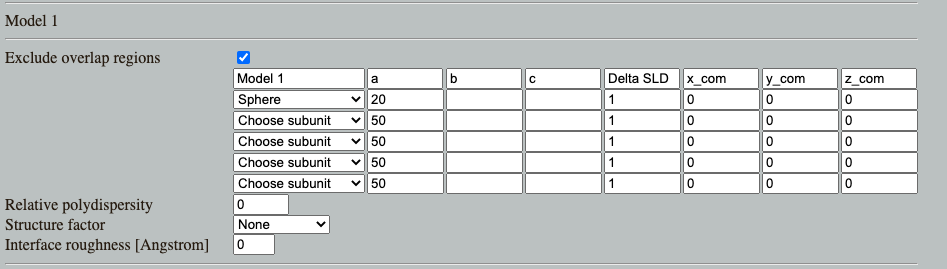

Home
Prerequisites:
Download and install SASview
Monodisperse spheres
Download and install SASview
Go to: Shape2SAS, and simulate a sphere with a 20 Å radius
Look and think
Download the simulated data: Iq.dat
Load into SasView and fit with sphere
Does the fitted radius match the input for the simulations (20 Å)?
Polydisperse spheres
Go to: Shape2SAS, and simulate a sphere with a 20 Å radius